gageLin: Function to visualize and calucalte the linearity of a gage.
Source:R/7_MSALinearity.R
gageLin.RdFunction visualize the linearity of a gage by plotting the single and mean bias in one plot and intercalate them with a straight line. Furthermore the function deliver some characteristic values of linearity studies according to MSA (Measurement System Analysis).
Usage
gageLin(
object,
conf.level = 0.95,
ylim,
col,
pch,
lty = c(1, 2),
stats = TRUE,
plot = TRUE
)Arguments
- object
An object of class
MSALinearitycontaining the data and model for the linearity analysis. To create such an object seegageLinDesign.- conf.level
A numeric value between `0` and `1`, giving the confidence intervall for the analysis. Default value: `0.95`.
- ylim
A numeric vector of length 2 specifying the y-axis limits for the plot. If not specified, the limits are set automatically based on the data.
- col
A vector with four numeric entries. The first gives the color of the single points, the second gives the color of the points for the mean bias, the third gives the color fo the straight interpolation line and the fourth gives the color for the lines representing the confidence interval. If one of the values is missing or negative the points or lines are not plotted. col is by default `c(1,2,1,4)`.
- pch
A vector with two numeric or single character entries giving the symbols for the single points (1st entry) and the mean bias (2nd entry). The default vector is `c(20,18)`
- lty
a vector with two entries giving the line-style for the interpolating line and the confidence interval lines. For detailed information to the entries please see par. The default value for lty is `c(1,2)`.
- stats
Logical value. If `TRUE` (default) the function returns all calculated information.
- plot
Logical value indicating whether to generate a plot of the linearity analysis. Default is
TRUE.
Value
The function returns an object of class MSALinearity which can be used with e.g. plot or summary.
Examples
# Results of single runs
A=c(2.7,2.5,2.4,2.5,2.7,2.3,2.5,2.5,2.4,2.4,2.6,2.4)
B=c(5.1,3.9,4.2,5,3.8,3.9,3.9,3.9,3.9,4,4.1,3.8)
C=c(5.8,5.7,5.9,5.9,6,6.1,6,6.1,6.4,6.3,6,6.1)
D=c(7.6,7.7,7.8,7.7,7.8,7.8,7.8,7.7,7.8,7.5,7.6,7.7)
E=c(9.1,9.3,9.5,9.3,9.4,9.5,9.5,9.5,9.6,9.2,9.3,9.4)
# create Design
test=gageLinDesign(ref=c(2,4,6,8,10),n=12)
# create data.frame for results
results=data.frame(rbind(A,B,C,D,E))
# enter results in Design
test$response(results)
test$summary()
#> ----------------------
#> Part Ref X1 X2 X3 X4 X5 X6 X7 X8 X9 X10 X11 X12
#> A 1 2 2.7 2.5 2.4 2.5 2.7 2.3 2.5 2.5 2.4 2.4 2.6 2.4
#> B 2 4 5.1 3.9 4.2 5.0 3.8 3.9 3.9 3.9 3.9 4.0 4.1 3.8
#> C 3 6 5.8 5.7 5.9 5.9 6.0 6.1 6.0 6.1 6.4 6.3 6.0 6.1
#> D 4 8 7.6 7.7 7.8 7.7 7.8 7.8 7.8 7.7 7.8 7.5 7.6 7.7
#> E 5 10 9.1 9.3 9.5 9.3 9.4 9.5 9.5 9.5 9.6 9.2 9.3 9.4
#> ----------------------
# no plot and no return
MSALin=gageLin(test,stats=FALSE,plot=FALSE)
# plot only
plot(MSALin)

MSALin$plot()
 # summary
MSALin$summary()
#> ----------------------
#> Part Ref X1 X2 X3 X4 X5 X6 X7 X8 X9 X10 X11 X12
#> A 1 2 2.7 2.5 2.4 2.5 2.7 2.3 2.5 2.5 2.4 2.4 2.6 2.4
#> B 2 4 5.1 3.9 4.2 5.0 3.8 3.9 3.9 3.9 3.9 4.0 4.1 3.8
#> C 3 6 5.8 5.7 5.9 5.9 6.0 6.1 6.0 6.1 6.4 6.3 6.0 6.1
#> D 4 8 7.6 7.7 7.8 7.7 7.8 7.8 7.8 7.7 7.8 7.5 7.6 7.7
#> E 5 10 9.1 9.3 9.5 9.3 9.4 9.5 9.5 9.5 9.6 9.2 9.3 9.4
#> ----------------------
#>
#> Call:
#> lm(formula = BIAS ~ ref)
#>
#> Residuals:
#> Min 1Q Median 3Q Max
#> -0.41000 -0.12000 0.01667 0.11667 0.89000
#>
#> Coefficients:
#> Estimate Std. Error t value Pr(>|t|)
#> (Intercept) 0.73667 0.07252 10.16 1.73e-14 ***
#> ref -0.13167 0.01093 -12.04 < 2e-16 ***
#> ---
#> Signif. codes: 0 '***' 0.001 '**' 0.01 '*' 0.05 '.' 0.1 ' ' 1
#>
#> Residual standard error: 0.2395 on 58 degrees of freedom
#> Multiple R-squared: 0.7143, Adjusted R-squared: 0.7094
#> F-statistic: 145 on 1 and 58 DF, p-value: < 2.2e-16
#>
#> ----------------------
#> Linearity:
#> 13.16667
# summary
MSALin$summary()
#> ----------------------
#> Part Ref X1 X2 X3 X4 X5 X6 X7 X8 X9 X10 X11 X12
#> A 1 2 2.7 2.5 2.4 2.5 2.7 2.3 2.5 2.5 2.4 2.4 2.6 2.4
#> B 2 4 5.1 3.9 4.2 5.0 3.8 3.9 3.9 3.9 3.9 4.0 4.1 3.8
#> C 3 6 5.8 5.7 5.9 5.9 6.0 6.1 6.0 6.1 6.4 6.3 6.0 6.1
#> D 4 8 7.6 7.7 7.8 7.7 7.8 7.8 7.8 7.7 7.8 7.5 7.6 7.7
#> E 5 10 9.1 9.3 9.5 9.3 9.4 9.5 9.5 9.5 9.6 9.2 9.3 9.4
#> ----------------------
#>
#> Call:
#> lm(formula = BIAS ~ ref)
#>
#> Residuals:
#> Min 1Q Median 3Q Max
#> -0.41000 -0.12000 0.01667 0.11667 0.89000
#>
#> Coefficients:
#> Estimate Std. Error t value Pr(>|t|)
#> (Intercept) 0.73667 0.07252 10.16 1.73e-14 ***
#> ref -0.13167 0.01093 -12.04 < 2e-16 ***
#> ---
#> Signif. codes: 0 '***' 0.001 '**' 0.01 '*' 0.05 '.' 0.1 ' ' 1
#>
#> Residual standard error: 0.2395 on 58 degrees of freedom
#> Multiple R-squared: 0.7143, Adjusted R-squared: 0.7094
#> F-statistic: 145 on 1 and 58 DF, p-value: < 2.2e-16
#>
#> ----------------------
#> Linearity:
#> 13.16667